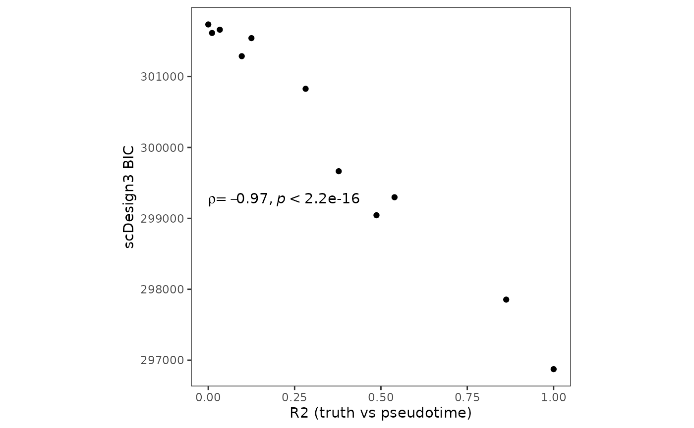

Evaluate pseudotime quality by scDesign3
Dongyuan Song
Bioinformatics IDP, University of California, Los Angelesdongyuansong@ucla.edu
Qingyang Wang
Department of Statistics, University of California, Los Angelesqw802@g.ucla.edu
1 October 2022
Source:vignettes/scDesign3-pseudotimeQuality-vignette.Rmd
scDesign3-pseudotimeQuality-vignette.Rmd
library(scDesign3)
library(dyngen)
library(SingleCellExperiment)
library(ggplot2)
library(dplyr)
theme_set(theme_bw())Introduction
In this tutorial, we will first use the R package dyngen
to generate a dataset with ground truth "pseudotime". Then, we will
perturb the ground truth pseudotime to worsen its quality and use
scDesign3’s BIC to examine pseudotime quality.
Generation of reference dataset & Simulation
We will first use dyngen to generate a dataset with
ground truth “pseudotime”.
set.seed(123)
backbone <- backbone_linear()
config <-
initialise_model(
backbone = backbone,
num_cells = 500,
num_tfs = nrow(backbone$module_info),
num_targets = 100,
num_hks = 50,
verbose = FALSE
)
out <- generate_dataset(
config,
format = "sce",
make_plots = FALSE
)
example_sce <- out$dataset
colData(example_sce)$pseudotime <- out$model$experiment$cell_info$time Secondly, we perturb the generated time by percentage, ranging from 0% to 100%.
example_sce_list <- lapply(0:10, function(x) {
perturb_prop <- x/10
n_cell <- round(dim(example_sce)[2]*perturb_prop)
cell_index <- sample(1:dim(example_sce)[2], n_cell)
new_pseudotime <- colData(example_sce)$pseudotime
new_pseudotime[cell_index] <- runif(n_cell)
curr_sce <- example_sce
colData(curr_sce)$pseudotime <- new_pseudotime
curr_sce
})Thirdly, we run the function scdesign3 on datasets with
perturbed pseudotime.
scDesign3_result <- lapply(example_sce_list, function(x) {
res <- scdesign3(
sce = x,
assay_use = "counts",
celltype = NULL,
pseudotime = "pseudotime",
spatial = NULL,
other_covariates = NULL,
mu_formula = "s(pseudotime, bs = 'cr', k = 10)",
sigma_formula = "1",
corr_formula = "ind",
copula = "gaussian",
n_cores = 10
)
return(res)
})Visualization
After the simulation, we can plot the BIC values from our function
scdesign3 vs calculated \(r^2\) between the original pseudotime and
perturbed pseudotime.
bic_list <- lapply(scDesign3_result, function(x){return(x$model_bic)})
bic_df <- data.frame(matrix(unlist(bic_list), nrow = length(bic_list), byrow = TRUE))
colnames(bic_df) <- names(bic_list[[1]])
r2 <- sapply(example_sce_list, function(x){
cor(colData(example_sce)$pseudotime, colData(x)$pseudotime)^2
})
metric <- tibble(bic = bic_df$bic.marginal, r2 = r2, Method = paste0("perturb ",seq(0,100,by = 10), "%"))
p_pseudotime_metric <- metric %>% ggplot(aes(x = r2, y = bic,label = Method)) + geom_point() + theme_bw() + theme(aspect.ratio = 1,
panel.grid.minor = element_blank(),
panel.grid.major = element_blank()) + ggpubr::stat_cor(method = "spearman", cor.coef.name = "rho", label.x.npc = "left", label.y.npc = 0.5) + ylab("scDesign3 BIC") + xlab("R2 (truth vs pseudotime)")
p_pseudotime_metric